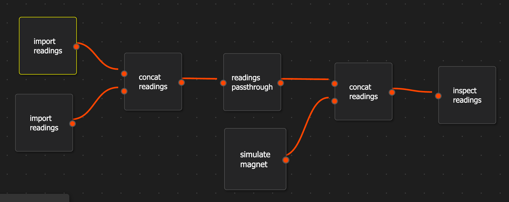

UDPP - User Defined Processing Pipeline
{kind=link}
After usage of the CLI and taking some measurements of the magnets, its time ro process them.
One solution is to use a Jupyter Notebook to call the MRP functions directly or using UDPP interface.
Here its possible to define a data analysis pipeline (as such in CI pipelines) and run them like CLI commands.
Installation
Note
In order to allow direct running of the examples below, the venv is used.
So all cli commands are changed to: ./venv/bin/python3.9 ./MRPudpp/udpp.py instead of python3 ./MRPudpp/udpp.py.
To list all enabled pipelines the command can be used.
# List enabled pipelines
$ ./venv/bin/python3.9 ./MRPudpp/udpp.py pipeline listenabledpipelines
generate_temperature_calibration_reading.yaml
Pipeline Definition
Settings
Each pipeline starts with a settings section which contains some information about the pipeline.
The enable parameter allows to skip the execution of the pipeline using the udpp.py pipeline run command.
# PIPELINE DEFINITION
---
settings:
name: "<pipeline name>"
enabled: true
export_intermediate_results: true
Step definition
The step definition contains a function that will be called and their needed input parameters.
A list of callable function can be retrieved using udpp.py pipeline listfunctions:
# List enabled pipelines
$ ./venv/bin/python3.9 ./MRPudpp/udpp.py pipeline listfunctions
{'import_readings': {'name': 'import_readings', 'parameter_names': ['input_folder', 'file_regex', 'recursive'], 'parameter_types': {'input_folder': 'str', 'file_regex': 'str', 'recursive': 'bool'}, 'default': ('', '(.)*.mag.json', False), 'return': 'list(MRP.MRPReading.MRPReading)'}}
...
These are implemented in UDPPFFunctionCollection.py.
By modifying the file it is possible to make further functions available to the pipeline system.
This example shows how to create a step which calls the import_readings function.
# STEP DEFINITION
stage import_readings: #stage <stage_name>
function: import_readings # function to call see udpp.py pipeline listfunctions or UDPPFFunctionCollection.py
main: true # RUN AT STARTUP = ENTRYPOINT
parameters:
input_folder: tlv493d_N45_12x12x12
regex: (.)*.mag.json
Note
The main parameter if set to true, is the entrypoint for the pipeline.
In one step this parameter must be set to true.
Connect several stages
To create a flow (connecting several stages together), the output of one stage can be the input of another stage.
This can be done using the name of a stages stage <name> as parameter of the next stage.
Note
Its not possible to implement any sort of circles! The system checks at startup for circles and any other misconfigurations.
# LETS ADD TWO READinG IMPORTER STAGES
stage import_readings_b:
function: import_readings
main: true
parameters:
input_folder: tlv493d_N45_12x12x12
regex: (.)*.mag.json
stage import_readings_a:
function: import_readings
main: true
parameters:
input_folder: tlv493d_N45_1
Pipeline Examples
Note
All and further examples are located in the pielines folder.
pipeline_simple.yaml
settings:
enabled: false
export_intermediate_results: false
name: pipeline_simple
stage import:
function: import_readings
parameters:
IP_input_folder: ./readings/tlv493d_N45_12x12x12/525771256544952/SENSOR_0/
# IP_file_regex: (.)*.mag.json
# IP_parse_idx_in_filename: True
stage inspect:
function: inspect_readings
parameters:
readings_to_inspect: stage import
IP_export_folder: ./readings/tlv493d_N45_12x12x12/525771256544952/SENSOR_0/reports
IP_log_to_std: False
pipeline_simple.yaml
settings:
enabled: false
export_intermediate_results: false
name: pipeline_plot
stage import:
function: import_readings
parameters:
IP_input_folder: ./readings/tlv493d_N45_12x12x12/525771256544952/SENSOR_0/
stage import_bias_reading:
function: import_readings
parameters:
IP_input_folder: ./readings/tlv493d_offset/
IP_file_regex: (.)*SID0.mag.json # use the same sensor id as for the normal readings. so the regex parameter is used
stage apply_bias_offset:
function: apply_sensor_bias_offset
parameters:
bias_readings: stage import_bias_reading
readings_to_calibrate: stage import
stage plot_normal:
function: plot_readings
parameters:
readings_to_plot: stage import
IP_export_folder: ./readings/tlv493d_N45_12x12x12/525771256544952/SENSOR_0/plots/normal/
IP_plot_headline_prefix: N45 12x12x12 measurement run overview
stage plot_normal_bias_offset:
function: plot_readings
parameters:
readings_to_plot: stage apply_bias_offset
IP_export_folder: ./readings/tlv493d_N45_12x12x12/525771256544952/SENSOR_0/plots/calibrated/
IP_plot_headline_prefix: N45 12x12x12 measurement run overview with bias_offset applied
Function Collection
Note
Currently, usable functions doesnt support tuple or arrays as input and output parameters. Please encapsulate these type into custom classes or dicts.
All currently implemented usable functions are located in MRPudpp.UDPPFFunctionCollection